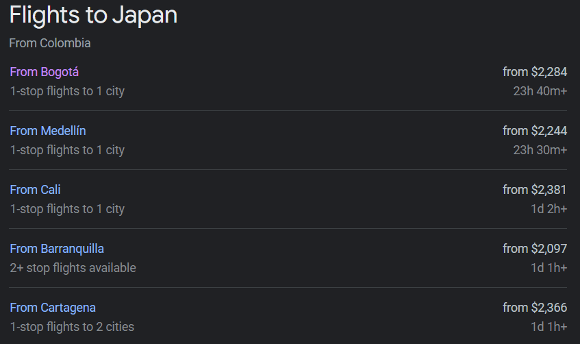
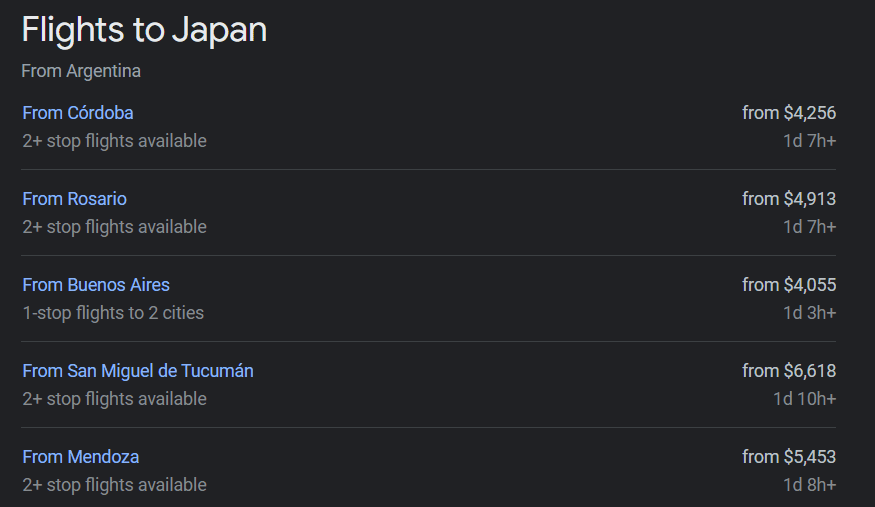

Destino
!Japon!
Hacer turismo en Japón es adentrarse en una cultura milenaria que, al mismo tiempo, se ha adaptado y ha liderado la adaptación de los avances tecnológicos y las vanguardias culturales. Los lugares turísticos de Japón, como sus principales ciudades, le sorprenderán porque en ellos se mezclan con maravillosa armonía modernidad y tradición, el ajetreo de la vida cotidiana con espacios que le transmitirán paz.
Video Introductorio
Presupuesto para conocer por primera vez
Lo que mas dinero requiere son los hospedajes con un 60% del total del budge, se come en cafeterias que es muy economico, y los transportes sin los tiquetes te puedes gastar en promedio 2.600usd a 3.000usd
Los tiquetes varian segun el Pais
 